Лабораторная работа №1
Введение программирование. Работа с потоком ввода-вывода данных. Работа с математическими операциями.
Цель работы: Получение навыков работы по созданию программ с использованием потоков ввода – вывода данных на экран.
Материальное обеспечение: Компьютерное оборудование и программное обеспечение.
Краткие теоретические сведения
Запуск программы:
Запуск программы:
1.Откройте среду Visual Stiduo. Затем выберите Visual C++ и консольное приложение Win 32, а в пункте имя введите соответсвующее имя проекта и нажмите кнопку ОК. Нажмите кнопку «далее».
2. 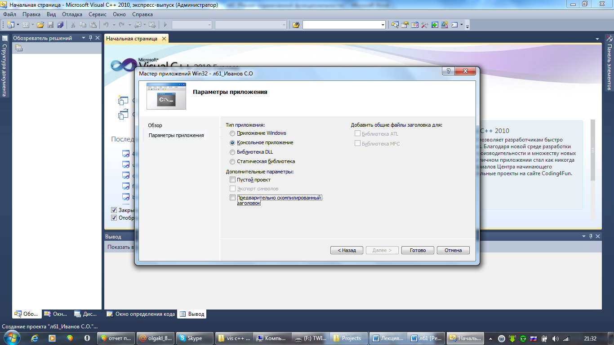
Рис 1.1. Завершение создание проекта.
Запустить программу можно несколькими способами:
1.Нажать с клавиатуры F5;
2.Зайти во вкладкду Отладка и выбрать пункт Начать отладку.
3.На панели быстрого доступа нажать на кнопку зеленого треугольника.
Основные понятия и определения
Программа начинает свое выполнение с директивы #include, включающей заголовочный файл ”iostream” – позволяет программе выводить данные на экран. Подключая библиотеку ввода – вывода, без которой компьютер не поймет определенные в ней функции cout.
После написания заголовочных файлов следует написать строку using namespace std, которая позволяет использовать пространство имен std глобально. Возможно ее использование в виде двух вариантов (рис 1.2; рис 1.3):
 Первый вариант: используется функция
using namespace std
сразу же после написания заголовочных файлов т.е такое написание позволяет использовать пространство имен
std
глобально.
Первый вариант: используется функция
using namespace std
сразу же после написания заголовочных файлов т.е такое написание позволяет использовать пространство имен
std
глобально.
Рис 1.2 Первый вариант записи .
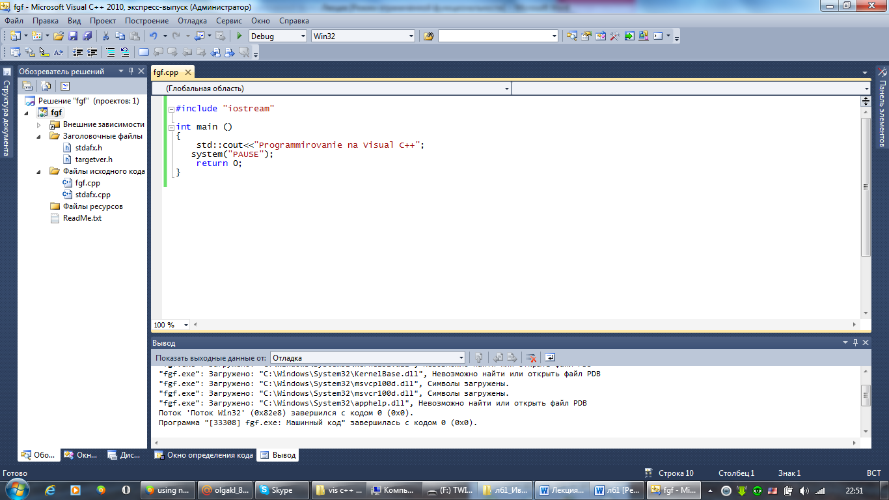
Рис 1.3 Второй вариант записи.
Любая программа начинает свое выполнение с функции main(). Функция – представляет собой, набор операторов внутри программы, выполняющих определенную задачу. Каждая функция имеет уникальное имя. А каждая программа имеет, по крайней мере, одну функцию. Ключевое слово int перед main, сообщает, что main «возвращает значение» являющееся целым числом. Фигурные скобки { } – начало и конец функции. В С++ каждый оператор, также каждая строка с обращением к функции заканчивается ; .
Потоки ввода вывода данных:
сout – стандартный поток вывода сообщений на экран.
cin – поток ввода данных с клавиатуры.
<< - оператор вставки, который позволяет программе вставлять символы в выходной поток. endl – переводит курсор на новую строку.
system ("PAUSE") - необходим для задержки экрана или cin.get() – ожидает ввод символа.
return 0 - говорит об успешном завершении программы.
Этапы выполнения программы включают следующие пункты
1.Определяете, с какими именно библиотеками вы будете работать. В данном случае с библиотекой <iostream>. Данная библиотека обеспечивает работу потока cout.
2.Написание функции using namespace std, которая позволяет использовать пространство имен std глобально.
3.Написание главной функции программы. Функция main - главная функция программы.
4.Начало тела функции. Открывается фигурная скобка.
5.Написание операторов программы и выражений. В данном случае используя, оператор cout мы выводим сообщение на экран.
6.Конец функции. Закрывается фигурная скобка.
7.Написать программу, которая, используя выходной поток cout, выводит сообщение на экран. Используя, оператор endl разделить сообщение.
Пример программы, которая работает с потоками данных:
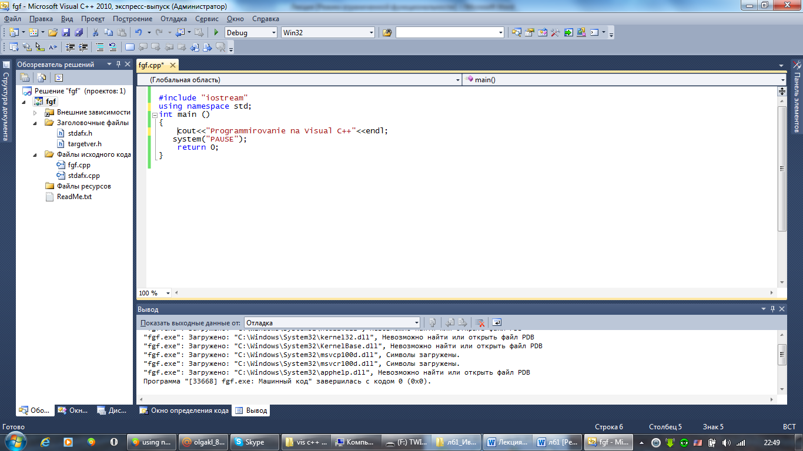
Основные типы данных языка С++:
|
Тип |
Описание |
Например |
|
char |
для обозначения символьных переменных |
char str; |
|
int |
для обозначения целых чисел. |
int a; |
|
float |
для обозначения вещественных чисел одинарной точностью. |
float a; |
|
double |
для обозначения вещественных чисел двойной точности. |
double a; |
|
bool |
логический тип, который имеет 2 значения: true, false. |
bool a; |
Основные типы данных могут быть расширены с помощью следующих модификаторов:
|
Тип |
Описание |
|
|
unsigned |
употребляется для обозначения переменных только с положительными числами. |
unsigned char str; |
|
short |
употребляется для обозначения коротких целых чисел. |
short int a; |
|
long |
употребляется для обозначения длинных целых чисел |
long int a; |
К типам данных применяемых в С ++ используются разного типа операции.
1.Арифметические операции
2. Операции присваивания
3. Унарные и бинарные операции
4.Логические операторы и операции
К арифметическим операциям относятся:
|
+ |
Сложение
|
|
- |
Вычитание |
|
* |
Умножение |
|
/ |
Деление |
|
% |
Получение остатка |
К операциям присваивания относятся:
|
= |
присваивание |
|
+= |
присваивание со сложением |
|
- = |
присваивание с вычитанием |
|
*= |
присваивание с умножением |
|
/= |
присваивание с делением |
|
%= |
присваивание с получением остатка |
К унарным и бинарным операциям относятся:
|
++ |
увеличение на 1 (инкремент) |
x++ |
|
-- |
уменьшение на 1 (декремент) |
x-- |
|
! |
логическое НЕ |
if(!x) |
|
& |
взятие адреса |
int *x=&y |
|
* |
указатель |
int x=*y |
К логическим операциям относятся:
|
== |
равно |
|
!= |
не равно |
|
&& |
логическое И |
|
| | |
логическое ИЛИ |
|
> |
больше |
|
< |
меньше |
|
>= |
больше или равно |
|
<= |
меньше или равно |
Математические функции (описаны в заголовочном файле “math.h”)
|
ceil |
округление вверх |
ceil (2.5)=3 |
|
floor |
округление вниз |
floor(2.5)=2 |
|
sin |
синус |
угол задается в радианах |
|
cos |
косинус |
|
|
tan |
тангенс |
|
|
abs |
модуль целого числа |
|
|
fabs |
модуль дробного числа |
|
|
fmod(x,y) |
остаток от деления x на y |
fmod(3.2)=1 |
|
pow(x,y) |
возведение в степень |
pow(2.3)=8 |
|
sqrt |
квадратный корень |
sqrt(121)=11 |
Методический пример.
Составить блок – схему и написать программу, которая, используя операции присваивания, вычисляет значения трех переменных. Для первой переменной применить: присваивание со сложением, присваивание с вычитанием, присваивание с умножением, присваивание с делением. Для второй переменной вычислить следующее математическое выражение:
b=25*a*
.3  +15
+15
5c
.3 
Для третьей переменной: инкремент, декремент, присваивание с умножением.
начало
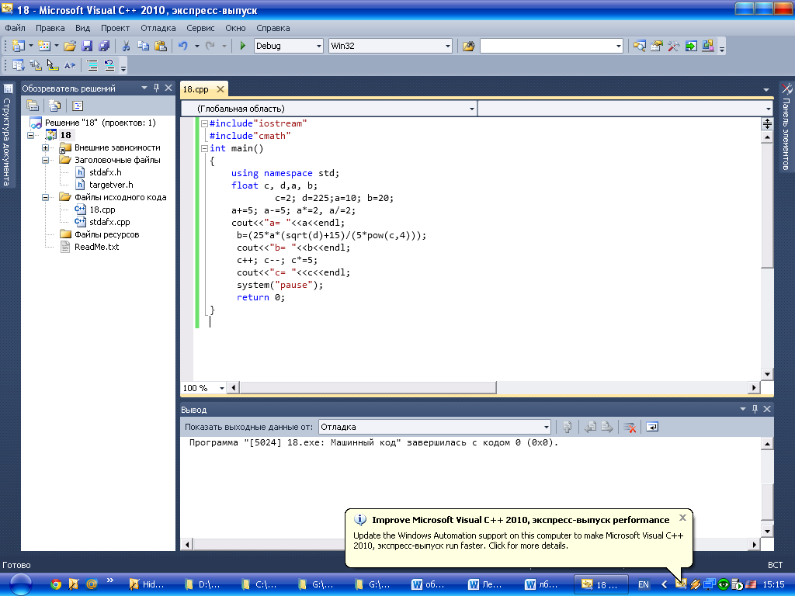
Результат программы:
a=10 b=93,75 c=10
Варианты заданий:
1.Написать программу, которая используя операции языка С++, вычисляет значения трех переменных. Для первой переменной применить: присваивание со сложением, присваивание с делением, присваивание с вычитанием. Для второй переменной: присваивание с умножением, увеличение переменной на 5. Для третьей переменной необходимо вычислить следующее математическое выражение:
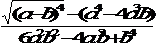 .3
.3
2.Написать программу, которая используя операции языка С++, вычисляет значения трех переменных. Для первой переменной применить: присваивание
c
умножением, присваивание с делением, присваивание с получением остатка. Для второй переменной: инкремент, декремент, присваивание со сложением. Для третьей переменной необходимо вычислить следующее математическое выражение:
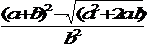
3.Написать программу, которая используя операции языка С++, вычисляет значения трех переменных. Для первой переменной применить: инкремент, декремент, увеличение переменной на 5. Для второй переменной: присваивание с умножением, присваивание с делением, присваивание с получением остатка. Для третьей переменной необходимо вычислить следующее математическое выражение:
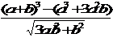
4.Написать программу, которая используя операции языка С++, вычисляет значения трех переменных. Для первой переменной применить: присваивание со сложением, присваивание с делением, присваивание с получением остатка. Для второй переменной:
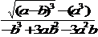
 Для третьей переменной: присваивание с умножением, присваивание с вычитанием.
Для третьей переменной: присваивание с умножением, присваивание с вычитанием.
5.Написать программу, которая используя операции языка С++, вычисляет значения трех переменных. Для первой переменной: увеличить переменную на 1, присваивание с умножением, уменьшить переменную на 1. Для второй переменной: присваивание с делением, присваиванием с получением остатка.
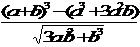 Для третьей переменной:
Для третьей переменной:
6.Написать программу, которая используя операции языка С++, вычисляет значения трех переменных. Для первой переменной: присваивание с умножением, присваивание с делением. Для второй переменной: декремент, инкремент, присваивание со сложением.
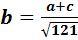 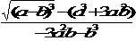
7.Написать программу, которая используя операции языка С++, вычисляет значения трех переменных. Для первой переменной:
присваивание с вычитанием, присваивание со сложением, присваивание с умножением.
Для второй переменной:
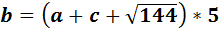
 Для третьей переменной:
увеличить переменную на 1,
присваивание с умножением.
Для третьей переменной:
увеличить переменную на 1,
присваивание с умножением.
8.Написать программу, которая используя операции языка С++, вычисляет значения трех переменных.
Для первой переменной применить: присваивание со сложением, присваивание с делением, присваивание с вычитанием. Для второй переменной: присваивание с умножением, декремент. Для третьей переменной необходимо вычислить следующее математическое выражение:
 .3
.3
9.Написать программу, которая используя операции языка С++, вычисляет значения трех переменных. Для первой переменной применить: инкремент, декремент, увеличение переменной на 10. Для второй переменной: присваивание с умножением, присваивание с делением, присваивание с получением остатка. Для третьей переменной необходимо вычислить следующее математическое выражение:
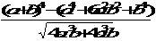
10.Написать программу, которая используя операции языка С++, вычисляет значения трех переменных. Для первой переменной: увеличить переменную на 25, присваивание с умножением, уменьшить переменную на 10. Для второй переменной: присваивание с делением, инкремент.
 Для третьей переменной:
Для третьей переменной:

Порядок выполения работы:
1.Изучить теоретические сведения по данной лабораторной работе.
2.Составить программу для заданного варианта.
3.Записать программу на языке Visual C++.
4.Отладить программу.
5.Продемонстрировать работу программы на ПК для заданного варианта.
Содержание отчета:
1.Тема и цель работы.
2.Вариант задания.
3.Блок – схема исходной задачи.
4.Листинг и результат программы.
5.Контрольные вопросы.
Контрольные вопросы:
1.Какой заголовочный файл необходимо использовать для создания программы?
2.С какой функции начинается программа?
3.Назовите отличия потоков: cin и потока cout.
4.Какой оператор говорит об успешном завершении программы?
5.Какие типы данных вы знаете?
6.В каком заголовочном файле описаны математические функции?
7.Какие операции вы знаете?
Контрольные вопросы:
Литература:
1.Хортон А. Visual 2010: полный курс.:Пер. с анг.-М.:ООО «И.Д.Вильямс», 2011г , 1216 с.: ил.
2.Пахомов Б.И. С/C++ и MS Visual C++ 2010 для начинающих. – СПб.:БХВ-Петербург, 2011.-736 с.:ил.
3.Зиборов В. В. MS Visual C++ 2010 в среде.NET. Библиотека программиста. — СПб.: Питер,
2012. — 320 с.: ил.
4.Прохоренок Н.А. Программирование на С++ в Visual Studio 2010 Express, - СПб.: Питер, 2011г , 71 с.: ил.
5.Степаненко О.Е. VisualC++.NET.Классикапрограммирования.:-М:Научнаякнига,К.;Бу-кипист,2010.—768с.